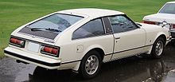
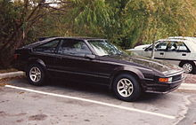
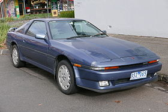

First Generation Supra (A40 or Mk1)
The first generation Supra was based largely upon the Toyota Celica liftback, but was longer by 129.5 mm (5.10 in). The doors and rear section were shared with the Celica but the front panels were elongated to accommodate the Inline-6 instead of the stock Celica's 4-cylinder engine. Toyota's original plan for the Supra at this time was to make it a competitor to the very popular Datsun (now Nissan) Z-car.
Second Generation Supra (A60 or Mk2)
The second generation is pure garbage. Please don't buy or even think about this generation. This is currently the biggest embararresment to the Supra line, aside from the Mk5 or A90 generation.
3rd Generation Supra (A70 or Mk3)
In February 1986, Toyota was ready to release its next version of the Supra. The bonds between the Celica and the Supra were cut; they were now two completely different models. The Celica changed to front-wheel drive, using the Toyota "T" platform associated with the Toyota Corona, while the Supra kept its rear-wheel-drive platform. The engine was updated to a more powerful 2,954 cc (3.0 L) inline-six engine rated at 200 hp (149 kW). Although initially only available with naturally aspirated engines, a turbocharged version was added in the 1987 model year. The Supra was now related mechanically to the Toyota Soarer for the Japanese market. All Japanese market Supras with the various versions of the 2.0 L engine were installed in a vehicle that was slightly narrower on the outside so as to be in compliance with Japanese Government dimension regulations so that Japanese buyers weren't liable for yearly taxes for driving a larger car.
4th Generation Supra (A80 or Mk4)
The best generation of all Supra, it is also the most underapprectiated. he stock A80 Supra chassis has also proven an effective platform for roadracing, with several top 20 and top 10 One Lap of America finishes in the SSGT1 class. In 1994, the A80 managed remarkable skidpad ratings of 0.95 lateral g's (200 ft) and 0.98 lateral g's (300 ft) Supra also featured a four-sensor four-channel track tuned ABS system with yaw control whereby each caliper is sensored and the brakes are controlled individually according to the speed, angle, and pitch of the approaching corner. This unique Formula One-inspired braking system allowed the Supra Turbo to record a 70 mph (113 km/h) -0 braking distance of 149 ft (45 m), the best braking performance of any production car tested in 1997 by Car and Driver magazine. This record was finally broken in 2004 by a Porsche Carrera GT, which does it in 145 ft (44 m).